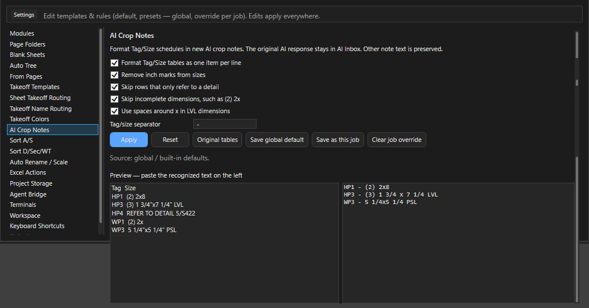
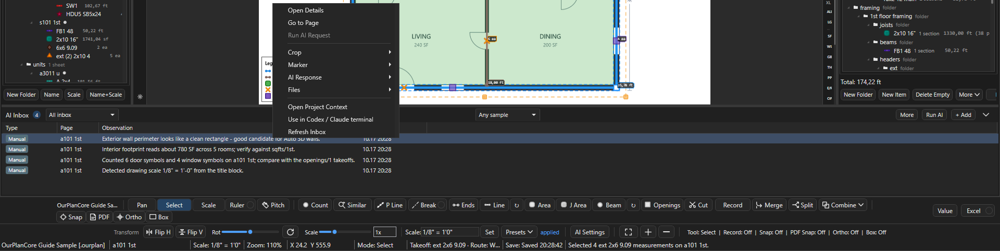
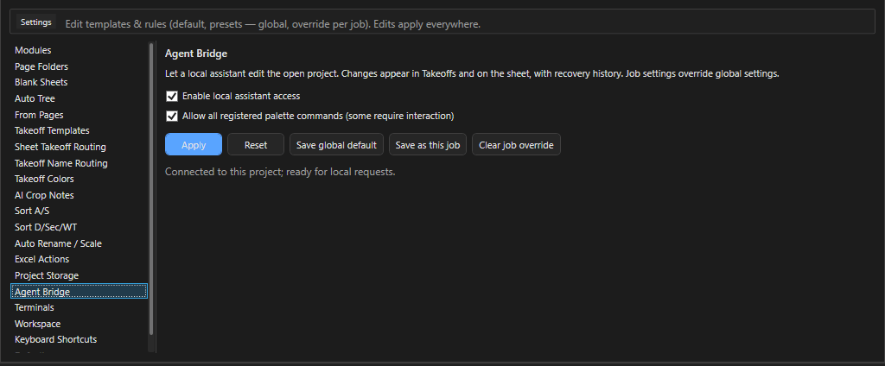

ИИ в OurPlanCore¶
Здесь - все места, где OurPlanCore 3.0 зовёт модель или внешнего агента: заметки из кропов и их формат (AI Crop Notes), чтение штампов листов, AI Inbox и AI Manager коротко, Agent Bridge. Нужно, когда хочется ускорить рутину, но так, чтобы каждый результат ИИ оставался на проверке у эстиматора. Терминалы Claude и Codex в окне программы со всеми кнопками, контекстом и сценариями описаны отдельно: Консоль ИИ.
Что есть и что для этого нужно¶
| Инструмент | Что делает | Онлайн | Что включить |
|---|---|---|---|
| AI crop here -> note | кроп таблицы или узла превращается в заметку takeoff | да | модуль AI, ключ OpenAI в AI Settings |
| AI Crop Notes | формат строк Tag/Size в таких заметках | нет | Settings > AI Crop Notes |
| AI Inbox и AI Manager | очередь запросов, ответы, наблюдения, маркеры | да | модуль AI |
| Similar с перепроверкой AI | совет, какой символ выбран | да | модуль AI, галка в диалоге Similar |
| OCR при Name | чтение номера листа без текстового слоя (Tesseract) | нет | работает всегда |
| AI по картинке штампа | имя листа, которое не удалось прочитать текстом и OCR | да | галка в Settings > Auto Rename / Scale |
Терминалы >_ (консоль ИИ) |
Claude или Codex в панели справа с живым контекстом плана | да | Git Bash и CLI ассистента, вход один раз |
| Agent Bridge | агент правит открытый проект через программу | нет (локально) | Settings > Agent Bridge |
Ключ OpenAI задаётся в диалоге AI Settings (кнопка на полосе инструментов, в AI Manager или команда OpenAI Settings в палитре); он сохраняется в переменные окружения пользователя Windows, в проект не пишется. Модель по умолчанию gpt-5-mini, список моделей там же. Всё, что помечено "да", уходит в сеть кропами листа: на чужих чертежах учитывайте это.
AI crop и AI Crop Notes¶

Как получить заметку из кропа таблицы¶
Зачем: строки schedule в Notes позиции без ручного набора.
Нужно: модуль AI, ключ в AI Settings, выбранная позиция в Takeoffs.
- Щёлкните ПКМ по листу и выберите AI crop here -> note (обвести область) или AI quick box here -> note.
- Дождитесь ответа в AI Inbox: ответ по schedule вида
Tag - Sizeпрограмма переформатирует в компактные строкиHP1 (2) 2x8без повторных заголовков и линий таблицы. - Проверьте строки по таблице на листе.
Результат: заметка в Notes выбранной позиции; исходный ответ остаётся в AI Inbox.
Settings > AI Crop Notes: Tag/size separator, предпросмотр (Preview - paste the recognized text on the left), галка Original tables, Reset, глобально и для проекта. Другой текст заметки не трогается.
Остальные пункты того же подменю AI Assist: Save AI crop here, Save AI marker here (образец символа, ниже), Ask AI about this point / area, Read text near point, Save observation here, Add as pending check, Suggest takeoff item here, Trace wall from this point, Trace closed area, Check missed takeoffs on this page. У замера: Save measurement AI crop (кроп вокруг замера с его описанием ложится в AI Inbox, модель не вызывается), Save measurement as AI marker (замер как образец), Explain measurement, Find Similar, Link to observation, Create note from measurement. Trace-команды работают детерминированно по геометрии PDF и показывают предпросмотр перед применением.
AI Inbox и AI Manager¶
AI Inbox - панель внизу Main View (модуль AI): наблюдения, кропы, запросы к модели, ответы и маркеры проекта, новые сверху; у запроса в начале строки статус [pending], [running], [done], [failed]. AI Manager - та же лента отдельной вкладкой с кнопками Run AI, Run New, Retry Failed и наборами маркеров (Менеджеры). Выводы ИИ - черновики, не замеры: в дерево они попадают только после проверки (ниже). Всё хранится в проекте, в папке AI_Context.

More, Run AI, + Add и стрелка свернуть. ПКМ по записи открывает меню действий.| Элемент | Где | Что делает |
|---|---|---|
стрелка в шапке (Toggle AI Inbox) |
шапка AI Inbox; команда палитры Toggle AI Inbox |
свернуть панель до шапки или развернуть |
Show AI Manager |
команда палитры | открыть вкладку AI Manager |
список Filter AI markers by type |
шапка | All inbox - все записи; All markers - только маркеры; тип (window_sample, door_sample, roof_edge_sample, ignore_area и другие) - только маркеры этого типа |
список Filter AI markers by sample kind |
шапка | Any sample, positive, negative, ignore: маркеры какого вида показать |
Run AI |
шапка | отправить выбранный запрос; если он не ждёт отправки, первый ожидающий в очереди |
More |
шапка | Run New Bookmarks, Retry Failed Bookmarks (пакет), Create Marker Set, Manage Marker Sets..., Export Marker Context (меню записи) |
+ Add |
шапка | своя заметка-наблюдение к текущему листу |
| Enter | выбранная запись | окно Observation Details |
Как отправить запрос модели¶
Зачем: получить ответ ИИ по кропу, точке или замеру, который ждёт в Inbox.
Нужно: модуль AI, ключ OpenAI в AI Settings, проект не read-only.
- Выделите запись со статусом
[pending]или[failed]в AI Inbox. - Щёлкните ПКМ и выберите Run AI Request (или кнопку
Run AIв шапке). - Прочитайте окно
Review AI Attachments: в нём файлы проекта (кропы, слои), которые уйдут в сеть. Нажмите Yes. - Дождитесь конца прогона: статус записи станет
[done]или[failed].
Результат: ответ виден в окне Observation Details (Enter по записи) блоками AI Request, AI Response и AI Action Draft. Если в ответе есть точки, проверьте черновик (ниже).
Как сохранить образец символа: маркер¶
Зачем: показать ИИ, как выглядит нужный символ (окно, дверь, край крыши), чтобы потом искать такие же. Нужно: модуль AI, проект не read-only.
- Щёлкните ПКМ по символу на листе и выберите AI Assist > Save AI marker here; по готовому замеру - AI Assist > Save measurement as AI marker.
- Выберите Marker type из списка или впишите свой.
- Выберите Sample kind:
positive- так выглядит нужное,negative- похоже, но не то,ignore- эту область не смотреть. - При необходимости заполните Value / measurement text (размер, марка) и Note, нажмите Save.
Результат: кроп вокруг точки сохранён, маркер виден на листе и записью в AI Inbox, статус Saved AI marker <тип> on <лист>. По маркеру работает Find Similar From Marker: в очередь встаёт запрос с кропом маркера и кропом соседней области листа, ответ приходит черновиком действий.
Как проверить черновик действий ИИ¶
Зачем: превратить найденные ИИ точки в замеры только после своей проверки.
Нужно: у записи есть ответ с точками (после Run AI Request, Find Similar From Marker или ручного ответа).
- Щёлкните ПКМ по записи и выберите AI Response > Preview Action Draft: программа открывает лист и рисует точки черновика поверх чертежа.
- Выберите AI Response > Review Action Draft: откроется окно со строками-кандидатами.
- Отметьте верные строки в колонке Accept (кнопки
Accept Selected,Reject Selected,Accept Valid,Reject All;Preview Selectedпоказывает выбранные на листе). - Выберите для каждой принятой строки Target Takeoff: готовую позицию или
New AI Line Item,New AI Area Item,New AI Count Item. - Нажмите Apply Accepted, затем уберите точки предпросмотра: AI Response > Clear Action Preview.
Результат: принятые кандидаты стали замерами в выбранных позициях, черновик помечен reviewed; принятые и отклонённые строки запоминаются как отзыв по маркерам.
Add Manual AI Response (в окне Observation Details кнопка AI Response) вписывает ответ вручную, например полученный в консоли ассистента: он сохраняется как готовый (done), и из него сразу строится черновик действий.
Как отправить кропы пакетом¶
Зачем: набрать кропы при просмотре листов и отправить их модели одним прогоном.
- Щёлкните ПКМ по записи с кропом и выберите Crop > Bookmark Crop For Batch AI: статус
Bookmarked crop ...; Run New will send it to OpenAI. - Повторите для других кропов.
- Нажмите More > Run New Bookmarks в шапке AI Inbox (
Run Newв AI Manager): новые закладки уходят модели по очереди. - Повторите неудачные: More > Retry Failed Bookmarks (
Retry Failed).
Результат: статус Processed new crop bookmarks: N done, N failed, N total, ответы в Inbox. Если ответ нашёл кандидатов с точками, программа сама добавляет по каждому новую закладку-кроп (один уровень, без дублей рядом); их отправит следующий Run New.
Меню записи AI Inbox: справка¶
Все пункты меню записи и кнопки окна Observation Details
| Пункт | Подменю | Что делает |
|---|---|---|
Open Details |
- | окно Observation Details с текстом записи, запросом, ответом и черновиком |
Go to Page |
- | открыть лист, к которому относится запись |
Run AI Request |
- | отправить запрос этой записи модели (выше) |
Open Crop |
Crop | показать PNG кропа в окне просмотра |
Open Crop Folder |
Crop | открыть папку кропов проекта в проводнике |
Bookmark Crop For Batch AI |
Crop | закладка для пакетного прогона (выше) |
Edit Marker |
Marker | то же окно, что при сохранении маркера: тип, вид образца, значение, заметка |
Delete Marker |
Marker | удалить маркер после подтверждения; кроп и журнал остаются в AI_Context |
Find Similar From Marker |
Marker | поставить в очередь поиск похожих по образцу |
Create Marker Set From Filter |
Marker | сохранить маркеры под текущими фильтрами именованным набором (имя и Description / use); то же More > Create Marker Set |
Manage Marker Sets... |
Marker | список наборов: Apply Filter (выставить фильтры набора), Rename..., Delete (удаляет только файл набора), Open JSON |
Export Marker Context |
Marker | выгрузить видимые маркеры под фильтрами в JSON для внешнего агента и открыть файл |
Hide This Marker Type |
Marker | спрятать маркеры этого типа на листе; запоминается для проекта |
Show All Marker Types |
Marker | вернуть на лист все спрятанные типы |
Add Manual AI Response |
AI Response | вписать ответ вручную (выше) |
Preview Action Draft, Review Action Draft, Clear Action Preview |
AI Response | показать, проверить и убрать черновик действий (выше) |
Apply Sheet Metadata Response |
AI Response | применить ответ модели по имени и масштабу листа (ниже) |
Open Request JSON и другие |
Files | служебные файлы записи в Блокноте |
Open Project Context |
- | журнал проекта project.md: все наблюдения подряд, в Блокноте |
Use in Codex / Claude terminal |
- | отдать запись ассистенту в консоли (консоль ИИ) |
Refresh Inbox |
- | перечитать список с диска |
Кнопки окна Observation Details: Go to Page, Open Crop, Request JSON, Run AI, AI Response (ручной ответ), Project Context (журнал проекта), Close.
AI при чтении имён листов¶
Кнопка Name (и Name+Scale) ищет номер листа по тексту всего комплекта. Если текстового слоя нет, работает встроенный OCR (правая полоса штампа, нижняя полоса, выученное место). Если и он не дал номер, лист можно отдать модели: Settings > Auto Rename / Scale, галка Read title blocks the PDF text cannot name with AI (online; AI module and OPENAI_API_KEY).
- Не больше 80 листов за прогон; ответы кешируются в проекте (
AI_Context/cache/sheet_vision), картинки штампа удаляются после запроса. - Результат виден в Sheet Manager: колонки
Name Source/Name Conf.,Why. - Колонка
Keptв таблице правил - обучение без ИИ: сколько раз имя с таким тегом оставалось финальным при открытии проектов.
Запрос по выбранным листам вручную (модули Sheet Manager и AI):
- Щёлкните ПКМ по листу или папке в Pages и выберите PDF Metadata > Queue GPT Metadata Fallback.
- Прочитайте итог в окне: программа берёт только листы, где разбор PDF не нашёл номер, название или масштаб (или текста нет совсем) и где ещё нет такого запроса; для каждого сохраняет кроп штампа (по областям
Crop Hints, если они заданы) и ставит запрос в AI Inbox. - Отправьте запросы:
Run AI Requestпо записи илиAI Fillв Sheet Manager (он сам ставит, отправляет и записывает ответы в таблицу листов). - Примените ответ по записи: ПКМ > AI Response > Apply Sheet Metadata Response, проверьте в окне предпросмотра галки
Renameи столбецScale Action, нажмите Apply.
Результат: имя и масштаб листа обновлены только там, где оставлены галки.
Терминалы Claude и Codex¶
Кнопка >_ на правой командной полосе открывает панель с Git Bash внутри окна программы: ассистент видит проект, лист, выделение, закладки и кропы через живой файл контекста, а правит проект через Agent Bridge. Кнопки панели, строка ctx, AI Crop +, Settings > Terminals, сценарии и что делать, если терминал не стартует: Консоль ИИ.
Agent Bridge¶

Что это. Канал, через который внешний агент (Claude Code, Codex) правит открытый проект руками самой программы: изменения сразу видны в дереве и на листе, ведётся журнал восстановления, удалённое уходит в AI_Context/agent-trash. Файлы проекта за спиной программы агент не трогает: если переписать Takeoffs на диске и нажать Refresh, программа залёет своё состояние из памяти.
Кому. Владельцу и агентам, которые помогают мерить; эстиматор в окне ничего не нажимает, кроме включения.
Где включается. Settings > Agent Bridge: Enable local assistant access и Allow all registered palette commands (some require interaction); Apply, Reset, глобально и для проекта. По умолчанию выключено.
Что умеет. Клиент agent_bridge.py лежит в папке Tools\AgentBridge рядом с EXE, команды: sessions, ping, status, commands, inspect, context, save, refresh, refresh_pages, reload, apply, undo, palette. Через apply агент создаёт, переименовывает, двигает, копирует и удаляет папки и позиции Takeoffs, меняет свойства позиций, добавляет и заменяет замеры. Каждый пакет требует ревизию из inspect; при конфликте нужен новый inspect. save ждёт настоящего сохранения пакета и сообщает результат, undo откатывает последний пакет агента.
Чего не умеет. Не ставит масштаб страницы; листы только читает и обновляет; команды палитры лишь запускает (dispatched, без результата) и не обходит модули и read-only; не работает при открытом модальном окне или незаконченном жесте рисования; таймаут - не повод повторить запрос с новым ID. Один агент на сессию открытого проекта.
Правила работы агента с деревом (имена, move вместо create+delete, типы замеров) - в скилах владельца; для эстиматора важно одно: после работы агента проверить дерево и нажать Ctrl+S.
Что ИИ не делает¶
- Не заменяет масштаб и проверку по известному размеру.
- Не считает за вас: Similar, AI crop, Trace дают кандидатов, которые надо подтвердить.
- Не читает закрытые проекты: мост и терминалы работают только с открытым проектом.
См. также¶
- Консоль ИИ - терминалы Claude и Codex в окне
- Менеджеры - AI Manager, Sheet Manager
- Settings: все категории
- Workspace и второй компьютер
- Листы Pages - Name, Scale
- Правка и привязки - Similar
- Идеи и планы - что про ИИ ещё в планах